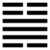

Lôi Phong Hằng (恆 héng)
Thoán từ: :
恆: 亨, 无咎; 利貞, 利有攸往．
Hằng: Hanh, vô cữu; lợi trinh, lợi hữu du vãng.
Dịch: Lâu dài thì hanh thông, không có lỗi; giữ được chính đạo thì có lợi, tiến hành việc gì cũng thành công.
Thoán truyện Giảng: Cương (Chấn) ở trên, nhu (Tốn) ở dưới, sấm gió giúp sức nhau, Chấn động trước, Tốn theo sau, thế là thuận đạo. Lại thêm ba hào âm đều ứng với ba hào dương, cũng là nghĩa thuận nữa, cả hai bên đều giữ được đạo chính lâu dài.
Ý nghĩa các hào:
1
初六: 浚恆, 貞凶, 无攸利．
Sơ lục: tuấn hằng, trinh hung, vô du lợi.
Dịch: Hào 1, âm: Quá mong được thân mật lâu dài; cứ quyết (trinh) như vậy, không chịu bỏ thì xấu, không làm gì được thuận lợi cả.
Giảng: Hào 1 ứng với hào 4, nhưng địa vị mình quá thấp, địa vị 4 quá cao, mà 4 là dương cương, chỉ trông lên không ngó xuống mình; lại thêm có 2 hào 2 và 3 ngăn cách vậy mà không biết phận cứ tiến sâu (tuấn là sâu), mong được thân mật lâu dài, keo sơn với 4, thành ra ngu. Cứ kiên cố giữ cách ấy thì xấu.
2.
九二: 悔亡．
Cửu nhị: Hối vong.
Dịch: Hào 2, dương: hối hận tiêu hết.
Giảng: Hào này dương cương ở vị âm, đáng lẽ có hối hận, nhưng vì đắc trung lại ứng với hào 5 cũng đắc trung, thế là giữ được đạo trung, nên không có gì hối hận.
3.
九三: 不恆其德, 或承之羞, 貞吝．
Cửu tam: Bất hằng kì đức, hoặc thừa chi tu, trinh lận.
Dịch: Hào 3, dương : không thường giữ được cái đức của mình, có khi bị xấu hổ, dù chính đáng cũng đáng tiếc.
Giảng: Hào dương ở vị dương là đắc chính, nếu thường giữ được đức “chính” đó thì tốt; nhưng vì quá cương mà bất đắc trung, lại theo đòi với hào trên cùng âm nhu, thế là bỏ cái đức chính của mình, muốn kết bạn với hào trên cùng, chưa biết chừng bị xấu hổ đấy. Vậy 3 tuy “chính” đấy, chỉ vì không thường giữ được đức đó, thì tuy chính mà vẫn đáng tiếc.
4.
九四: 田无禽．
Cửu tứ: Điền vô cầm.
Dịch: Hào 4, dương : như đi săn mà không được cầm thú.
Giảng: Hào dương mà ở vị âm, là không phải chỗ của mình mà cứ ở lâu chỗ đó, vì trong quẻ Hằng thì chẳng nên việc gì, chỉ mất công thôi, như đi săn mà không bắt được cầm thú.
5.
六五: 恆其德, 貞. 婦人吉, 夫子凶．
Lục ngũ: Hằng kỳ đức, trinh. Phụ nhân cát, phu tử hung.
Dịch: Hào 5, âm: giữ được thường (lâu) đức của mình, bền mà chính. Đàn bà thì tốt, đàn ông thì xấu.
Giảng: Hào 5, âm nhu, đắc trung, ứng với hào 2 dương cương cũng đắc trung, nếu cứ thuận tòng từ trước tới sau thì là bền mà chính đáng. Nhưng đó chỉ là đạo của đàn bà như hào 5, âm này thôi; không hợp với đàn ông, vì theo quan niệm thời xưa, phu xướng phụ tùy.
Tiểu tượng truyện giảng thêm, đàn ông phải tìm ra cái gì đáng làm thì làm (phu tử chế nghĩa), chứ cứ một mực theo vợ thì xấu.
6.
上六: 振恆, 凶．
Thượng lục: chấn hằng, hung.
Dịch: Hào trên cùng, âm: cử động hoài, không chịu yên thì xấu.
Giảng: Ở trên cùng quẻ Hằng và ngoại quái Chấn, cho nên nói là ham động quá, lại âm nhu, không bền chí, ở yên không được sẽ thất bại.
*
Quẻ này quan trọng ở hào 5: đạo phu xướng phụ tùy của Trung Hoa thời xưa. Một lời khuyên là theo lý mà làm, đừng hành động càn.